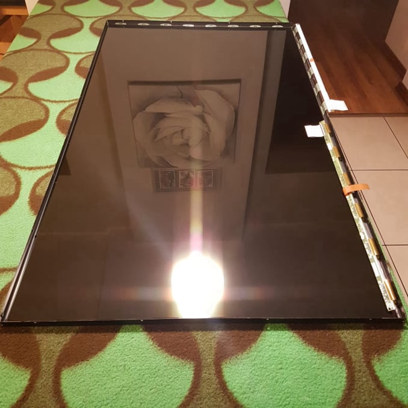
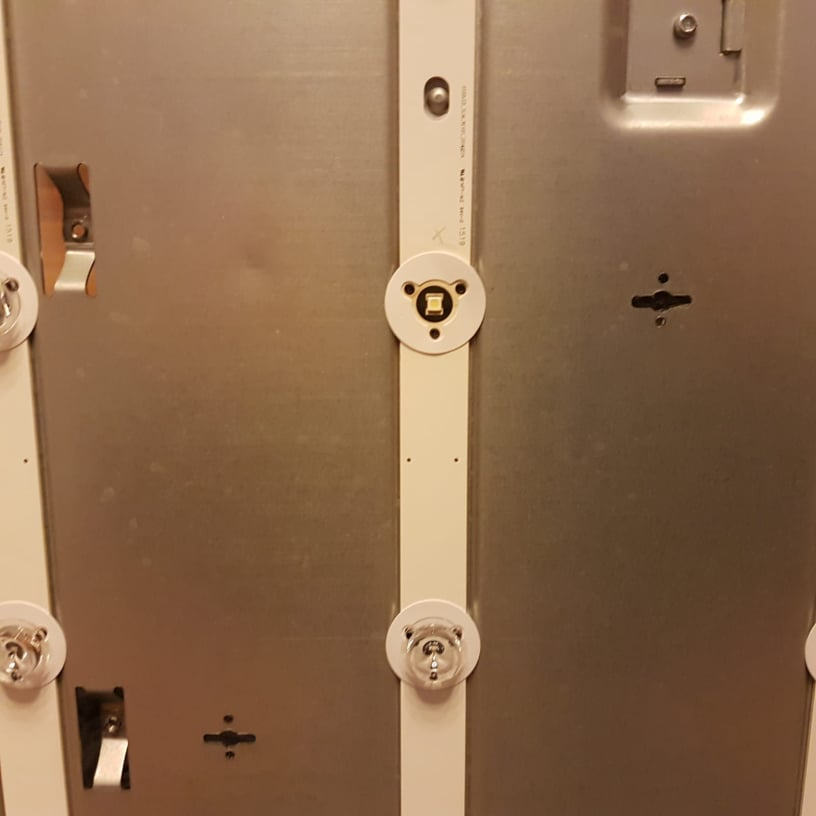
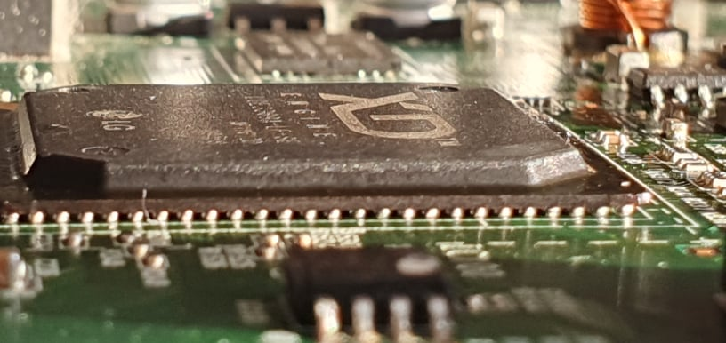

Website Building Software
Płaskie panele LCD zmieniły bezpowrotnie technologię wyświetlania obrazu.Niestety oszczędności na częsciach i czasem celowe błędy projektowe powoduje dość częste awarie.Co raz niższe ceny w sklepach nie zachęcają do naprawy uszkodzonych telewizorów.Niestety z niską ceną idzie też niska jakość,dlatego czasem warto naprawić uszkodzony telewizor.

Często odbiornik posiada dzwięk,ale nie ma obrazu.Podświetlając ekran latarką można zobaczyć treść obrazu.
W takim przypadku problemem jest tzw Backlight ( podświetlenie tylne bądz krawędziowe).
Takie uszkodzenie można naprawić.Wymienia się wtedy Led stripy na nowe.Powodem uszkodzeń jest złe zaprojektowanie odbioru ciepła z diod LED.

Coraz większa wydajność i malejące rozmiary urządzeń prowadzą do dużych naprężeń cieplnych na płytach głównych.Powodem jest złe dobieranie radiatorów cieplnych przez producentów,kosztem życia produktu.W wielu przypadkach tzw. reballing przywraca do zycia urządzenie.Czasem jednak konieczna jest wymiana procesora.
Website Building Software